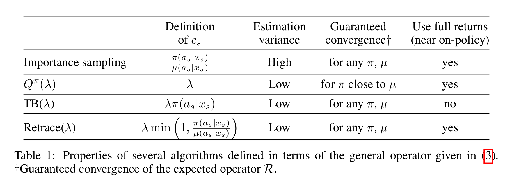
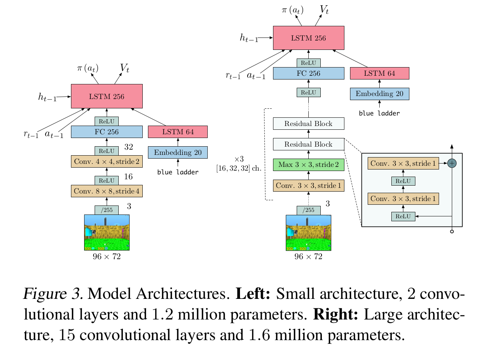
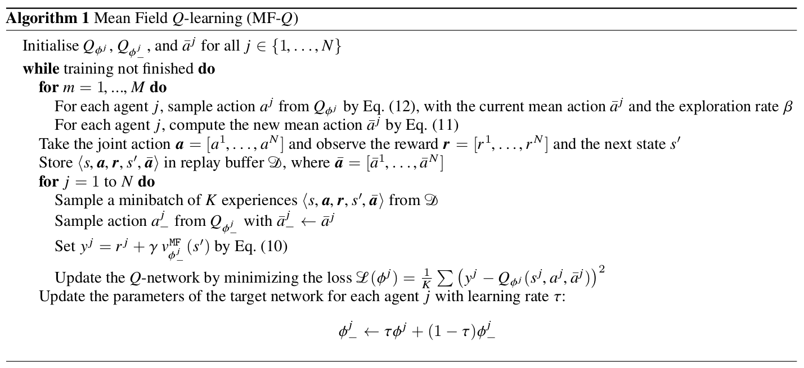
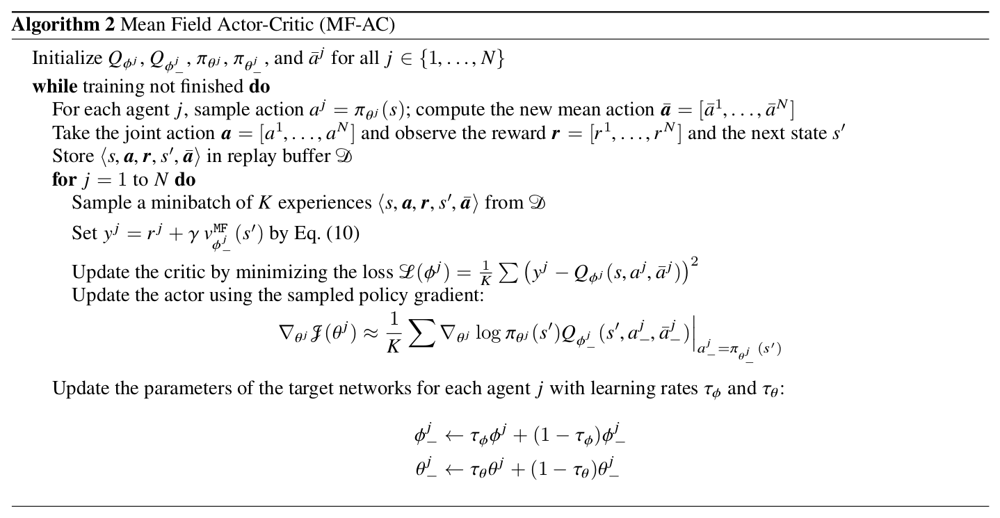
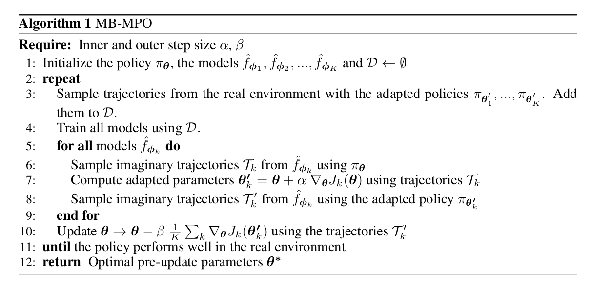

知乎之前有这样一个问题：DeepMind和OpenAI身后的两大RL流派有什么具体的区别?
由于之前研究方向的原因，我个人对OpenAI以及UCB系列的工作更熟悉一些，这里主要是几篇DeepMind的文章梳理，也会包含一些其他的文章，持续更新
Retrace: Safe and Efficient Off-Policy Reinforcement Learning
文章研究的是一个基础而关键的问题：如何将TD方法推广至off-policy。针对此问题作者提出了retrace方法，这种方法具有以下三种性质
- Low variance: avoid variance explosion by cliiping
- Efficient: the algorithm is able to use full returns
- Safety guarantee: applicable for arbitrary target policy and behavior policy
回顾一下MDP基础知识，off-policy TD方法对应的是数学期望形式的Bellman equation，对于每一步更新，其广义的Bellman operator可以写为
其中$\pi$是target policy，$\mu$是behavior policy，按照$c_{i}$的定义不同可以分为几种不同的TD方法，包括
Importance sampling: $c_{i}=\frac{\pi(a_{i}|s_{i})}{\mu(a_{i}|s_{i})}$
Off-policy $Q^{\pi}(\lambda)$ and $Q^{*}(\lambda)$: $c_{i}=\lambda$
Let $\epsilon=\max_{s}||\pi(a|s)-\mu(a|s)||_{1}$ be the off-policyness, Harutyunyan et al proved that the operator defined by $c_{i}=\lambda$ is a contraction mapping with the fixed point $Q^{\pi}$ if $\lambda<\frac{1-\gamma}{\gamma\epsilon}$, and the contraction mapping with the fixed point $Q^{*}$ if $\lambda<\frac{1-\gamma}{2\gamma}$
The author has pointed out that the convergence guarantee of this contraction mapping relies on the knowledge of $\epsilon$, which can not be evaluated in practice during the policy evaluation. Thus this is not safe for arbitrary $\pi$ and $\mu$.
- Tree-backup $TB(\lambda)$: $c_{i}=\lambda\pi(a_{i}|s_{i})$
The operator defines a contraction mapping for any arbitrary $\pi$ and $\mu$, which makes it a safe algorithm. However, the algorithm is not effcient for the case when $\pi$ and $\mu$ is near, because it prevents the model to make full use of longer returns.
- Retrace$(\lambda)$:d $c_{i}=\lambda\min(1,\frac{\pi(a_{i}|s_{i})}{\mu(a_{i}|s_{i}})$
用文中作者的原话来总结
$Retrace(\lambda)$ uses an importance sampling ratio truncated at 1. Compared to IS it does not suffer from variance explosion of the product of IS ratios.
It does not cut the traces as much as $TB(\lambda)$, making it possible to benifit from full returns.
一份表格说明$Retrace(\lambda)$和这几种方法的关系与区别

- $Retrace(\lambda)$ is the first algorithm for off-policy evaluation and control whose convergence does not require GLIE assumption.
- The author proves the convergence of Watkin’s $Q(\lambda)$, which is an open problem since 1989.
- Experimental evaluation is performed on Atari 2600 games. I believe the major contribution of this work is that its theory extends the eligibility trace algorithm, and becomes the motivation of V-trace (IMPALA), which is much more applicable for large and complicated MDPs.
IMPALA: Scalable Distributed Deep-RL with Importance Weighted Actor-Learner Architectures
DeepMind在AlphaStar星际争霸AI上用到的技术之一，主要做了以下几点改进
- Actor-Learner Architecture
基于A3C改进，作者采用Actor-Learner架构：
- 多个Actor异步地与环境交互，将交互得到的trajectories放入全局队列，并周期性地从learner的policy网络copy参数给自己;
- Learner采用trajectory-based optimization的结构，通过一个LSTM网络对trajectories循环进行处理（如下图所示。该架构可以极大地提高分布式训练的吞吐量，满足data efficiency和resource utilization的要求

- V-trace
由于整个架构是异步更新，actor的behavior policy会落后于learner所学习的target policy，因此本文引入了V-trace方法来对off-policyness做correction。V-trace方法的表达式形式非常恶心，首先定义对于状态$s_{i}$的value approximation $v_{i}$为:
其中
- $\delta_{t}{V}=\rho_{t}(r_{t}+\gamma{V}(s_{t+1})-V(s_{t}))$ 为TD error乘上一个不知道从哪里冒出来的$\rho_{t}$
- $\rho_{t}=\min(\bar{\rho},\frac{\pi(a_{t}|s_{t})}{\mu(a_{t}|s_{t})})$, $c_{k}=\min(\bar{c}, \frac{\pi(a_{k}|s_{k})}{\mu(a_{k}|s_{k})})$ 这两项是truncated importance sampling ratios
- $\bar{\rho}$和$\bar{c}$是两个常数，作者的设定是$\bar{\rho}>\bar{c}$，且$\bar{c}\geq{1}$，如果这两个条件满足，那么在on-policy训练的时候V-trace operator等价于n-step Bellman target（这个性质Retrace没有
除此以外DeepMind团队还做了一些工程优化，包括将数据准备与网络计算流水线化，用XLA编译了部分的tensorflow静态图，以及修改输入数据格式来更好地适应cudnn框架等等。
由此可见，IMPALA与其说是一套算法，不如说是一套工业级强度的asynchronous deep reinforcement learning框架，DeepMind这篇文章的野心，在于希望IMPALA成为ResNet、RCNN之于CV，seq2seq、BERT之于NLP同等的baseline而存在。
Mean Field Multi-Agent Reinforcement Learning
总结
发表于ICML2018的一篇文章，其实用mean field来做multi-agent RL这个思路想来还是很直观的，因为multi-agent RL中，我们的最终目标是学习最优的joint-policy，而这个全局最优的joint-policy很可能对于每个单一的agent而言都是次优的，所以每个agent的更新都应当取决于其他agent，通过交替迭代每个agent，最终的结果近似等价于对joint-policy做coordinate ascent优化。
上面的思路只是基于学过PRML之后对mean field有限的理解延伸得到的，实际文章中的处理还是要更加精巧一些。具体来说，这篇文章研究的问题背景可以归纳为
- Each agent is directly interacted with a finite set of other agents
- Stochastic games with a finite state space and action space
- The global joint-policy is guaranteed to make the future state distribution stationary
这篇文章的贡献主要在于
- 作者提出了一套基于mean field approximation的方法来训练multi-agent RL，在此框架下相邻agent的交互可以被简化成每一个agent与其相邻节点的action均值交互的过程。基于此formulation作者提出了mean field Q-Learning和mean field actor-critic两个算法
- 作者证明了在finite-state stochastic game情况下，加上若干technical assumption，mean field MARL算法最终可以收敛至Nash equilibrium


以下开始吐槽
Section 3的notation略混乱，导致读的时候比较费力，主要是由于作者上来就先假设action space是离散的，扭头就用二阶可微的条件对action space做了泰勒展开（见eq 7），再细琢磨了下发现作者其实是假设对于每一个agent，其所有相邻agent的action space可以近似看成连续的，因此eq 10处才对$\pi_{j}$用了累加形式的数学期望，却对$\pi_{-j}$用$\mathbb{E}_{\pi_{-j}}[.]$表示数学期望——然而Section 4中的证明又完全是在discrete setting下证的
此外，eq 7推到eq 8这一步的近似比较牵强，作者在Appendix B中为了证明泰勒展开的二阶项可以消掉，抬手就是一个二阶Lipchitz条件——要求$\nabla{Q}$满足Lipchitz continuous条件——由于现代神经网络普遍采用ReLU激活函数，这个假设显然不成立
假设太强最终会影响到算法在真实世界的任务上的适用性，虽然文章的实验比较充分，但三个实验都没有在benchmark任务上做。综上所述这几点，其实我还蛮希望可以看到这篇文章的rebuttal过程的
作者在introduction中claim说mean field MARL方法可以更好地应用于多agent问题，这一点其实是非常好的motivation，因为MARL领域中，如何处理agent数量较多的任务至今仍然是一个open problem，大部分方法的训练难度/训练时间都会随着agent数量的增加呈现出至少是线性（甚至是指数级别）的增长。因此，在benchmark任务上，尤其是continuous control任务上复现下这篇文章应该是个蛮有意思的探索方向
Technical Part
接下来看看作者的证明用到了哪些assumption
Each action-state pair is visited infinitely often, and the reward is bounded by some constant $K$
- $Q(s,a)$本身就是为了处理$v(s)$估计方差过大的问题而提出的，action-state pair无数次访问是$Q(s,a)$收敛的常规假设
Agent policy满足GLIE条件
- 文章中称采用的是Boltzmman policy，这种情况下随着temperature参数下降到0，policy会收敛至greedy，这条假设也是合理的
The Nash equilibrium for $\pi$ is recognized either as 1) global optimum or 2) a saddle point expressed as
相比假设1假设2，这条假设是比较强的，它认为在训练中的任何时刻$t$，对每个agent单独的policy $\pi_{j}$而言，Nash equilibrium都存在。
问题在哪里?这里引用Wikipedia的Nash’s existence theorem的内容：
Nash proved that if we allow mixed strategies, then every game with a finite number of players in which each player can choose from finitely many pure strategies has at least one Nash equilibrium.
Nash equilibria need not exist if the set of choices is infinite and noncompact. An example is a game where two players simultaneously name a natural number and the player naming the larger number wins. However, a Nash equilibrium exists if the set of choices is compact with continuous payoff. An example, in which the equilibrium is a mixture of continuously many pure strategies, is a game where two players simultaneously pick a real number between 0 and 1 (inclusive) and player one’s winnings (paid by the second player) equal the square root of the distance between the two numbers.
作者在文章中也解释说这个假设太强，实验中发现即使条件不满足也可以收敛（虽然实验部分并没有很好地justify这点
Model-Based Reinforcement Learning via Meta-Policy Optimization
简称MB-MPO，Pieter Abbeel组2018年发表在CoRL的一篇文章，OpenAI巨佬John Schulman也出现在了作者列表中，本文主要的内容是利用ensemble+meta-learning的思路来学习MDP的dynamics，从而训练一个可以快速在不同task上adapt的agent。
文章涉及到了两个重要的关键词：Model-based RL和meta-learning，我对这两个方向的了解都比较有限，但这篇文章的脉络很清晰，偏向于robotics方面的应用，没有什么理论分析，读起来也比较轻松愉快。实验部分非常充分，可以得到不少insights
Ensemble Learning for Model Dynamics
这里的model dynamics指的是一个MDP中，在当前状态下采取某个动作后到达下一状态的映射关系$f:\mathcal{S}\times\mathcal{A}\rightarrow\mathcal{S}$，在广义的MDP定义下$f$是一个随机映射，由$f$所确定的状态转换是一个Markov随机过程。传统的model-based RL方法就是要直接去学习这个映射关系$f$，这个学习过程会非常依赖于model的准确性：即使model对于每个transition三元组$(s_{t},a_t,s_{t+1})$的预测bias都很小，最终这个bias可能会在trajectory中积累，对最终结果带来很大的bias；换用更数学的语言来说，就是在MDP的设定下最终整个trajectory的bias是不能像普通的empirical risk minimization一样被bound的，这种现象叫做distributional shift
传统的解决方法包括
- 用data aggregation在训练时不断加入由model与agent直接交互得到的新的trajectories
- 避免让agent去探索model bias比较大的区域，可以训练Bayesian model来刻画model的uncertainty，或者直接训练一个生成式的模型来学习model的概率分布（文中指出这种方法训练出的agent往往过于保守）
- 通过特殊的优化方式或优化目标，代表性工作有DeepMPC: Learning Deep Latent Features for
Model Predictive Control以及Robust policy optimization - Differentiable trajectory optimization，优化时会遇到与RNN类似的问题，gradients either explode or vanish
本文的一个重要motivation在于，作者希望即使在model不是很准确的情况下agent也可以进行有效的学习，为了解决这个问题作者引入了ensemble
其中$J_{k}(\theta)$为在dynamic model $\hat{f}_{\phi_{k}}$下policy $\pi_{\theta}$的expected discounted reward
Meta-RL with Learned Dynamic models

在我看来，本文在meta-learning的方面并无创新之处，只是MARL算法框架的简单套用，因此这里不展开讨论这部分算法实现
即使如此，meta-learning背后的一些思想还是很吸引我的，按照我个人的理解，加上作者在related works一节中的梳理，meta-learning主要可以分为几类
- Learning to learn
- Learn an initialization of the network that can quickly adapt to several different tasks sharing the same state and action space (e.g. MARL)
- RL2: Fast Reinforcement Learning via Slow Reinforcement Learning, and One-shot Learning with Memory-Augmented Neural Networks
个人疑问：
- Meta-learning的定义貌似不是很清晰，meta-learning和one-shot learning, few-shot learning是什么关系？和transfer learning又是什么关系？有什么区别？
- MARL中，几个不同的任务可以在同一个parameter initialization的基础上通过一步gradient迭代得到，这种现象在何等程度上具有普遍性？两个语义完全不同的任务是否可以通过同一个元联系到一起？因为按照直觉来讲，利用随机梯度优化得到的网络参数应该是比较稳定的，参数空间在收敛点附近的梯度是很小的，在参数空间的微小扰动应该不足以完成一个网络的功能性迁移
- 为什么文章中优化adapted policy只需要用原始形式的policy gradient即可，而优化meta需要用TRPO？这是否说明从meta做adaption是很容易的，优化meta是很困难的？如果两个都用TRPO会如何？
- 作者展示了若干实验结果表明ensemble的估计方差与$D_{KL}(\pi_{\theta}||\pi_{\theta’_{k}})$呈显著正相关关系，为什么？这背后的原因值得深挖
Feedback-based MCTS
腾讯AILab发在ICML-2018上的文章，比较难读，文章主要做了两个工作
- 在continuous state space and finite action space MDP上提出了一种新的MCTS方法，按照作者的说法：“Leaf evaluators can be updated to produce a stronger tree search using previous tree search results”
- 对上面提出的MCTS方法提供了sample complexity analysis
除feedback-based MCTS方法以外，作者采用四种baseline作为对比
- No rollouts: 与AlphaZero设定相同
- Direct policy iteration
- Approximate value iteration
- Behavior clone (termed as SL agent in the paper)
比较有趣的地方在于作者直接对比了AlphaZero的方法，很少有人有能力做这样的对比实验。此外实验部分还有一些细节
- 直接用游戏引擎里的41维游戏信息作为输入
- 只做了1V1的evaluation
- Intead of using the argmax of the UCB scores, the authors sample actions from the softmax of UCT scores
- Hand-crafted reward function including health, damage, etc.
- Reward function mimics reward shaping proposed by Ng et al.